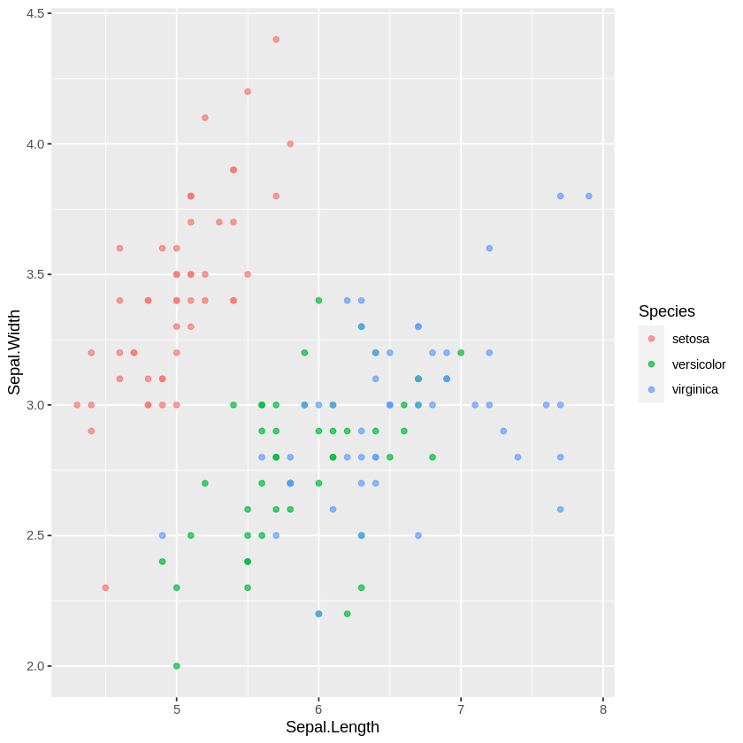

Google Colab R¶
Google is now supporting a colab notebook with the R engine
We can run R codes directly on Colab
-
Colab with R kernel
With base-R installed
Run R codes immediately
No need to setup
Save a copy in your Drive
sessionInfo()
R version 3.6.3 (2020-02-29)
Platform: x86_64-apple-darwin15.6.0 (64-bit)
Running under: macOS Catalina 10.15.7
Matrix products: default
BLAS: /Library/Frameworks/R.framework/Versions/3.6/Resources/lib/libRblas.0.dylib
LAPACK: /Library/Frameworks/R.framework/Versions/3.6/Resources/lib/libRlapack.dylib
locale:
[1] C/UTF-8/C/C/C/C
attached base packages:
[1] stats graphics grDevices utils datasets methods base
other attached packages:
[1] dplyr_1.0.0 ggplot2_3.3.2 jsonlite_1.7.0
loaded via a namespace (and not attached):
[1] magrittr_1.5 tidyselect_1.1.0 munsell_0.5.0 uuid_0.1-4
[5] colorspace_1.4-1 R6_2.4.1 rlang_0.4.7 tools_3.6.3
[9] grid_3.6.3 gtable_0.3.0 withr_2.2.0 htmltools_0.5.0
[13] ellipsis_0.3.1 digest_0.6.25 tibble_3.0.3 lifecycle_0.2.0
[17] crayon_1.3.4 IRdisplay_0.7.0 farver_2.0.3 purrr_0.3.4
[21] repr_1.1.0 base64enc_0.1-3 vctrs_0.3.4 IRkernel_1.1.1
[25] glue_1.4.2 evaluate_0.14 labeling_0.3 pbdZMQ_0.3-3
[29] compiler_3.6.3 pillar_1.4.6 generics_0.0.2 scales_1.1.1
[33] Cairo_1.5-12 pkgconfig_2.0.3
library(ggplot2)
library(dplyr)
Warning message:
“replacing previous import ‘vctrs::data_frame’ by ‘tibble::data_frame’ when loading ‘dplyr’”
Attaching package: ‘dplyr’
The following objects are masked from ‘package:stats’:
filter, lag
The following objects are masked from ‘package:base’:
intersect, setdiff, setequal, union
head(iris)
| Sepal.Length | Sepal.Width | Petal.Length | Petal.Width | Species | |
|---|---|---|---|---|---|
| <dbl> | <dbl> | <dbl> | <dbl> | <fct> | |
| 1 | 5.1 | 3.5 | 1.4 | 0.2 | setosa |
| 2 | 4.9 | 3.0 | 1.4 | 0.2 | setosa |
| 3 | 4.7 | 3.2 | 1.3 | 0.2 | setosa |
| 4 | 4.6 | 3.1 | 1.5 | 0.2 | setosa |
| 5 | 5.0 | 3.6 | 1.4 | 0.2 | setosa |
| 6 | 5.4 | 3.9 | 1.7 | 0.4 | setosa |
iris %>%
ggplot(aes(Sepal.Length, Sepal.Width, color=Species))+
geom_point(alpha=0.7)
